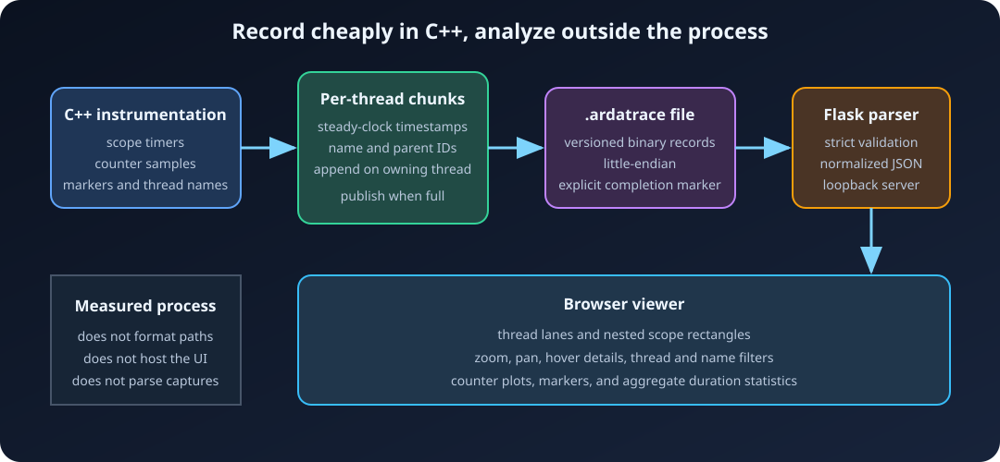

ArdaTrace Guide
ArdaTrace records CPU scope durations, numeric counters, and instantaneous
markers from C++ code into a versioned .ardatrace capture. A local Flask
server parses the capture and serves an offline browser viewer with thread
lanes, nested scopes, counter plots, markers, filters, and aggregate timing
statistics.

Recommended learning path
- Getting started — link the module, record a capture, and launch the viewer.
- Instrumentation — name threads, create automatic and named scopes, sample counters, emit markers, and understand hierarchy.
- Viewer, capture format, and practices — inspect captures, understand the binary pipeline, control overhead, and diagnose invalid captures.
What ArdaTrace records
| Event | C++ entry point | Viewer representation |
|---|---|---|
| CPU scope | ARDA_SCOPE_TIMER() |
A named interval on its thread lane |
| Named CPU scope | ARDA_NAMED_SCOPE_TIMER("Name") |
A named interval with an explicit parent |
| Counter sample | ARDA_TRACE_COUNTER("Name", Value) |
A numeric series on the shared timeline |
| Marker | ARDA_TRACE_MARKER("Name") |
A vertical instantaneous event |
| Thread metadata | SetCurrentTraceThreadName("Name") |
A readable thread-lane label |
Scope timers use std::chrono::steady_clock. Durations are recorded in
nanoseconds and displayed with an appropriate unit by the viewer.
System boundaries
ArdaTrace deliberately separates recording from analysis:
- instrumented C++ code writes compact binary records;
- completed per-thread event chunks are streamed to the capture file;
- labels are registered once and referenced by integer identifiers;
- no formatting or web work occurs on the timed path;
- the Flask viewer reads completed files and binds to loopback by default.
ArdaTrace currently records CPU-side activity. It does not yet collect GPU timestamp queries, allocation events, call stacks, or live network streams.
Main locations
- Runtime API:
Source/ArdaTrace/Public - Runtime implementation:
Source/ArdaTrace/Private - Runtime tests:
Source/ArdaTrace/Tests - Web viewer:
Tools/ArdaTraceViewer - Viewer launcher:
Scripts/RunTraceViewer.py
Critical lifecycle rule
StartTraceCapture() and StopTraceCapture() are process-wide lifecycle
operations. Start before instrumented worker threads begin and stop only after
those threads have finished or reached a known quiescent point. Do not start or
stop a capture concurrently with scope, counter, marker, or thread-name calls.